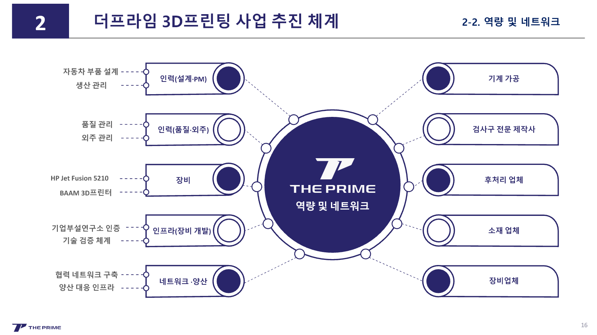
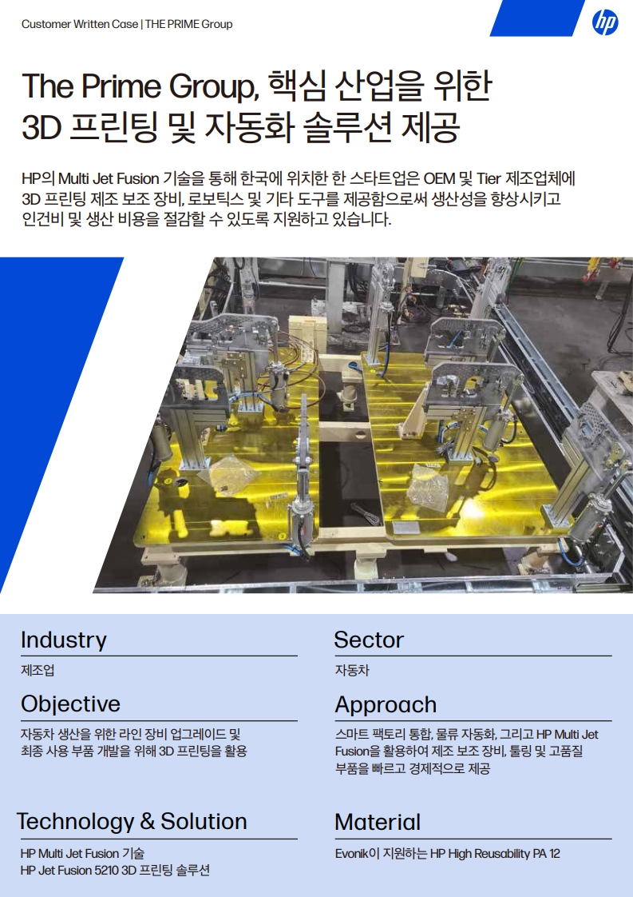
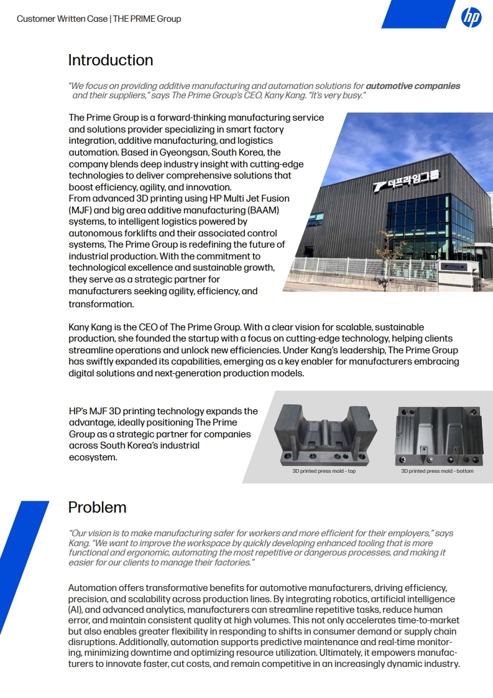

Results
등록에서 참석, 후속 신청까지 이어졌습니다.
공동 웨비나에 230명이 등록했고 약 170명이 실시간으로 참석했습니다.
행사 후 참가자 설문에서는 무료 출력 이벤트 신청 37건이 접수됐습니다.
- 230
- 공동 웨비나 등록등록자 기준 100%
- 약 170
- 실시간 참석등록 대비 약 74%
- 37
- 후속 신청 접수참석 대비 약 22%
HP Co-hosted Webinar 2025
회사 유튜브에 올린 3D 프린팅 콘텐츠를 보고
HP에서 먼저 협업을 제안했습니다.
자동차 부품 생산에 쓰이는
지그·검사구·몰드 사례를 발표 흐름에 맞게 정리하고,
더프라임그룹 발표 섹션을 디자인했습니다.
2025.10 · 발표 덱 사업 추진 체계·사업 전략 구성·디자인 · 발표는 웨비나 발표자가 진행
Inbound

HP 담당자가 회사 유튜브의 3D 프린팅 콘텐츠를 보고 연락해 오면서 공동 웨비나가 추진됐습니다. 여러 참여사가 함께 준비하는 자리인 만큼, 더프라임그룹의 기술과 적용 사례를 제조 현장의 맥락에서 설명할 발표 자료가 필요했습니다.
ORIGIN VIDEO · 협업 제안으로 이어진 유튜브 콘텐츠 — YouTube에서 보기 ↗
Role

Structure
3D 프린팅의 원리와 장점을 길게 나열하기보다, 자동차 부품 생산 과정에서 지그·검사구·몰드가 어떤 작업을 돕는지에 초점을 맞췄습니다.
내부 자료에 흩어져 있던 사례도 이 순서에 맞춰 다시 정리했습니다. 참가자가 기술을 적용한 이유부터 결과까지 자연스럽게 따라올 수 있도록 하기 위해서였습니다.
Outcome
Results
공동 웨비나에 230명이 등록했고 약 170명이 실시간으로 참석했습니다.
행사 후 참가자 설문에서는 무료 출력 이벤트 신청 37건이 접수됐습니다.
HP Case Study
웨비나 이후 HP는 회사가 제공한 콘텐츠로
더프라임그룹 케이스 스터디를 제작했습니다.
그 협업 과정은 직접 조율했습니다.
완성된 케이스 스터디는 2026년 3월 AM Korea에 게재됐습니다.


![웨비나 다시보기 썸네일 — [HP 웨비나] 기존 가공 방식의 한계 극복! 더프라임 맞춤형 3D프린팅 제조 혁신](https://i.ytimg.com/vi/Kn-4J2Flo-c/maxresdefault.jpg)